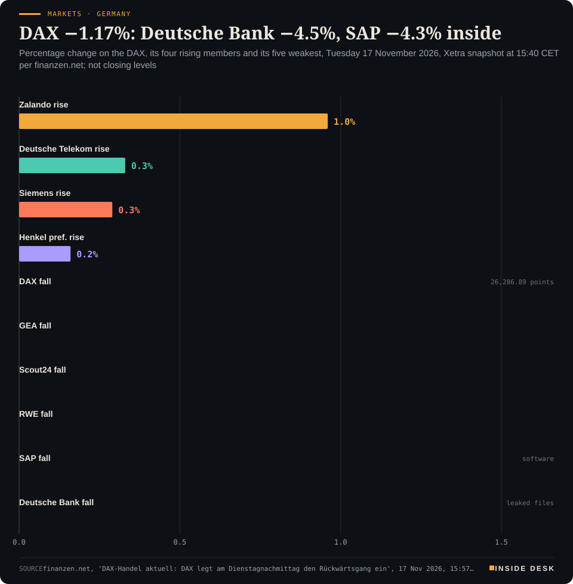
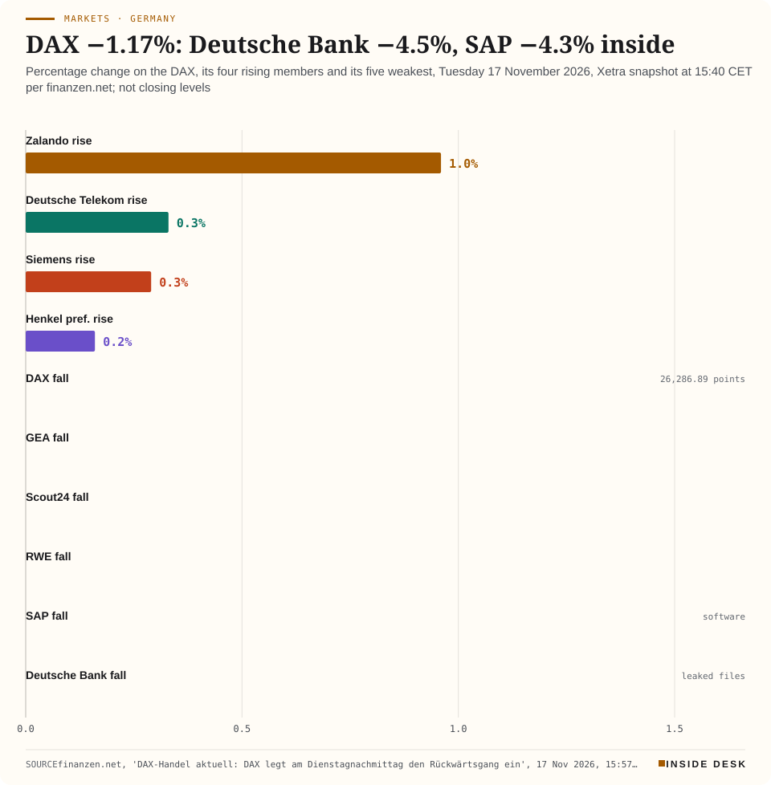
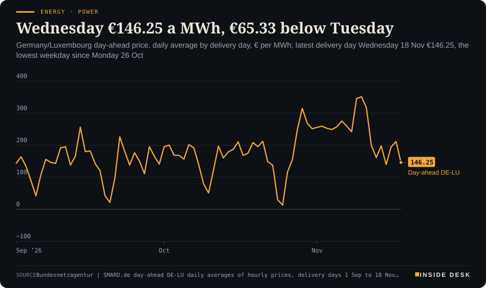
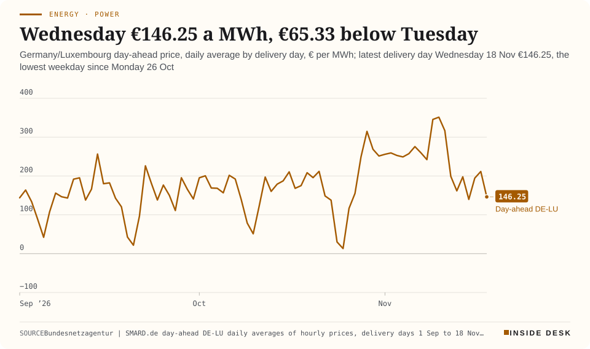

Inside Desk ePaper, Evening ePaper · Tue 17 Nov 2026
Tuesday, 17 November 2026Always free
Inside Desk
Evening ePaperPublished 17:30 CET · Berlin
Lead · Geo-economics
Iran's navy said three tankers caught fire on mines in Hormuz by Tuesday, and a fourth ship's crew was briefly unaccounted for. Brent barely moved. The reason is in the shipping and insurance books.
Iran's navy counted burning tankers in Hormuz while war-risk premiums kept easing and Brent barely moved. Also: Frankfurt 1.17% lower by mid-afternoon before Nvidia's night, a Dutch cabinet that stays, Washington's message to EU defence ministers, Wednesday's power €65 cheaper and 419,000 care-grade requests.
Iran said three tankers burned in Hormuz and oil barely moved, and Europe's shares slipped before Nvidia's numbers; on Tuesday the ledgers moved faster than the speeches.
Markets & Macro · p. 7
Energy & Industry · p. 11
Climate & Weather · p. 19
The day in one sentenceIran said three tankers burned in Hormuz and oil barely moved, and Europe's shares slipped before Nvidia's numbers; on Tuesday the ledgers moved faster than the speeches.
ContentsInside Desk · Evening ePaper17 November 2026
Iran's navy counted burning tankers in Hormuz while war-risk premiums kept easing and Brent barely moved. Also: Frankfurt 1.17% lower by mid-afternoon before Nvidia's night, a Dutch cabinet that stays, Washington's message to EU defence ministers, Wednesday's power €65 cheaper and 419,000 care-grade requests.
11 edition pieces · 11 desks · Published 17:30 CET, 17 November 2026
21 ePaper extras, added , 17 November. They appear only in the ePaper and carry their own time.
17:30 Evening ePaper, updated live until 22:30 with an “Updated” time and a Latest page
Sun 10:00 The Sunday Magazine
Berlin time. Every issue is free.
How to read it
Swipe, use the arrow keys or the page strip. Tap any headline for the reading view. Press / to search, t for contents, +/− to zoom. Download the PDF.
LatestInside Desk · Evening ePaper17 November 2026
Latest
Live: this page and the issue are updated until 22:30 Berlin time.
Evening ePaper published. No updates yet.
LeadInside Desk · Evening ePaper17 November 2026
Geo-economics · Lead · 3 min
Iran's navy said three tankers caught fire on mines in Hormuz by Tuesday, and a fourth ship's crew was briefly unaccounted for. Brent barely moved. The reason is in the shipping and insurance books.
By Tuesday afternoon Iran’s navy had a count. Three oil tankers, it said, had caught fire after striking naval mines in the Strait of Hormuz since early Tuesday, the third in the eastern part of the strait1. The navy repeated that the strait is “closed to shipping” and told vessels to coordinate with Iran’s armed forces, follow designated routes and keep their navigation systems switched on1. The Revolutionary Guards’ navy has also called the US-backed southern route a “minefield of fire”4.
Separately, a Panamanian-flagged gas tanker, the Tara Gas, was hit about seven nautical miles north of Khasab in Oman2. The accounts did not agree. The security monitor Vanguard and India’s ports minister, Sarbananda Sonowal, said the crew of 25, 24 of them Indian, was safe; the British agency UKMTO reported a second strike, a fire on board and the crew “currently unaccounted for”2. Meanwhile a third American aircraft carrier, the USS Theodore Roosevelt, joined two others in the region4.
Now look at the price. Brent crude was up 32 cents, or 0.4%, at $92.76 a barrel at 13:04 CET, and West Texas Intermediate rose 0.5% to $86.113. Over the month Brent has fallen 21% and WTI 18%3. Desk arithmetic: a 21% fall to $92.76 implies Brent started November somewhere near $117.
That is not indifference. It is a market reading a different document. The International Energy Agency said on Friday that the oil market will return to surplus in the fourth quarter as Middle East exports recover faster than demand, and the cost of shipping oil has dropped sharply as Gulf exporters push flows back towards pre-war levels3. Shipping data show more tankers making the passage, partly because of increased US security4. Each burning ship is a casualty and a claim. It is not, on its own, a change in how many barrels leave the Gulf.
LeadInside Desk · Evening ePaper17 November 2026
The insurance ledger says the same thing in a drier voice. Gulf additional war-risk premiums have eased to 7–9% of hull value, with some cover written as low as 5%, even though there have been more than 110 claims with estimated payouts of around $2.5 billion, according to Lloyd’s List figures reported by Insurance Business5. Before the war the rate was about 0.25%, Marsh’s Marcus Baker said; as recently as mid-October brokers quoted 6–10%5. Desk arithmetic: on a tanker insured for $100 million, 8% is $8 million for one exposure, against $250,000 before the war.
Why cheaper while ships still burn? Capacity and competition. Beazley assembled a $1 billion marine war consortium at Lloyd’s in April, a further Lloyd’s facility followed in June, and some underwriters now return as much as half the premium to owners whose ships pass without incident5. Not everyone is relaxed: Marsh Re puts Middle East losses in the war, terrorism and political violence class above $2 billion against annual gross premiums of roughly $2.5 billion, which could make this the class’s first loss-making year5. IUMI’s Lars Lange argues war risk stays insurable only if it is priced well above peacetime levels5.
The pressure points are therefore not where the speeches are. Tehran says the strait will not reopen until “the enemy accepts Iran’s conditions,” in the words of an army spokesperson4. Eurasia Group’s Ian Bremmer expects Iran to keep escalating attacks on tankers and Washington to widen its blockade, and calls the assumption that economic pressure will force Tehran to accept better terms a “misread”4. Those are forecasts by others, and worth knowing. What actually moves your heating oil and petrol bill is duller: the export volumes the IEA counts, the OPEC+ quota meeting on 29 November3, the US Strategic Petroleum Reserve, which fell to 276.4 million barrels last week, its lowest since August 19823, and the premiums underwriters in London are willing to write.
For you: when the headline says “tanker on fire” and the price says “plus 0.4%”, believe both. The first is a human and legal event for the crews and owners involved. The second is the sum of millions of contracts that care about the barrels still arriving. If the strait truly closes in practice, the export data and the insurance quotes will say so before any spokesperson does. Watch those, and you will not need to guess. Nothing here is investment advice.
Geo-economicsInside Desk · Evening ePaper17 November 2026
The Commission began sounding out member states on new Russia sanctions on Tuesday. The plan is banks, crypto and the shadow fleet, and deliberately nothing that invites a veto.
The European Commission began consulting member states on Tuesday about a new package of sanctions against Russia1. Brussels calls the process “confessionals”: one capital at a time, to test the waters and avoid surprises1. It will be the 22nd package since February 2022 and is to be formally presented before the end of the month1.
The likely targets are Russia’s banks, the cryptocurrency channels it uses to get round mainstream payment systems, and the ageing “shadow fleet” that carries oil past the price cap1. The fight against circumvention will feature prominently, backed by a dedicated sanctions office the Commission has set up for enforcement1.
The most telling line is what will be missing. No major or headline-grabbing measures are expected, so that negotiations run smoothly and conclude in December1. The last package saw several governments use vetoes to water down, postpone or delete parts they disliked, and officials want to avoid a repeat1. “I don’t think the appetite for more sanctions is diminishing among member states,” a senior diplomat said1.
On Wednesday the Commission presents a proposal for a €45 billion loan to cover Ukraine’s 2027 financing shortfall1.
For you: a sanctions package designed to pass quietly is not a weak one. Enforcement offices and payment channels are where sanctions actually bite; the grand announcements are mostly for the evening news.
Geo-economics · Brief · ePaper extra, added
Crude stocks in the US Strategic Petroleum Reserve fell to 276.4 million barrels last week, the lowest level since August 1982, Department of Energy data showed1. The drawdowns are part of a US agreement to release 172 million barrels from the reserve1.
The timing matters. Oil is cheaper, Brent stood at $92.76 at 13:04 CET, down 21% this month, as Gulf exports recover1. OPEC+ meets on 29 November to set 2027 output policy, after an online OPEC meeting on Monday reviewed members’ maximum sustainable capacity1.
For you: an emergency reserve is an insurance policy, and this one has been partly cashed. Prices falling does not refill it; only purchases do. Nothing here is investment advice.
Markets & MacroInside Desk · Evening ePaper17 November 2026
Markets & Macro · 2 min
Europe spent Tuesday a little over one per cent lower. The reasons were a bank's old files, a software sell-off and an invoice from California that nobody can read until after the US close.
At 15:40 CET the DAX stood 1.17% lower at 26,286.89 points, 311.75 below Monday’s close of 26,598.64 (Desk arithmetic)1. It had opened at 26,387.44 and found its low at 26,258.461. These are snapshot figures, not the settled close; Xetra trading ends at 17:30.
Markets · GermanyDAX −1.17%: Deutsche Bank −4.5%, SAP −4.3% insidePercentage change on the DAX, its four rising members and its five weakest, Tuesday 17 November 2026, Xetra snapshot at 15:40 CET per finanzen.net; not closing levels


Bar chart of Tuesday 17 November 2026 percentage changes in the DAX at 15:40 CET, per finanzen.net: Zalando up 0.96 percent, Deutsche Telekom up 0.33, Siemens up 0.29, Henkel preference shares up 0.16, the DAX down 1.17 at 26,286.89 points, GEA down 1.77, Scout24 down 1.93, RWE down 2.02, SAP down 4.26 and Deutsche Bank down 4.48 percent. These are intraday snapshot figures, not closes.
Source: finanzen.net, 'DAX-Handel aktuell: DAX legt am Dienstagnachmittag den Rückwärtsgang ein', 17 Nov 2026, 15:57 CET (levels at 15:40 CET via Xetra); intraday snapshot, not closing levels; retrieved 17 Nov 2026 · reported figures · CSV
Read the chart from the bottom. Deutsche Bank was down 4.48% at €31.44, the most traded DAX share by volume, after media reports built on leaked internal files1,3. SAP fell 4.26%, the software end of the AI worry1. Only four members were up at all, Zalando leading with 0.96%1. Around 14:40 CET the picture was the same across the region: Stoxx 600 −1.05% at 655.35, FTSE 100 −1.14%, CAC 40 −1.15%, Euro Stoxx 50 −1.19%2. Reuters put European tech 1.6% lower and linked it to Washington’s tighter rules on Chinese access to AI chips3.
Markets & Macro · Short item · ePaper extra, added
While everyone waits for one chip maker, America's largest home-improvement chain reported a quarter that beat forecasts and handed the top job to its CFO.
Home Depot reported quarterly sales of $43.4 billion on Tuesday, ahead of the $42.8 billion analysts had expected1. Demand from professional contractors and smaller repair jobs offset continued weakness in discretionary consumer spending, and the retailer raised its fiscal 2026 sales outlook to the top end of its earlier range, about 4.5% growth1.
It also named its chief financial officer, Richard McPhail, as chief executive from 23 November1. He succeeds Ted Decker, who took medical leave in August, has since returned, and will become chairman1.
The market’s verdict was mild. Shares were about 0.9% lower before the open and down 2% early in New York trading, with Investopedia describing the outlook as disappointing1,2.
This is the other test of the week, and arguably the more useful one for you. A chip maker’s quarter tells you what data-centre builders plan to spend. A hardware chain’s quarter tells you what plumbers, roofers and electricians actually billed, and whether households still fix the leaking tap themselves. The professionals are carrying the numbers; the do-it-yourself customer is not1.
A finance chief in the top job is not a strategy. It is a signal that the next years will be run on margins and inventories rather than on speeches. Nothing here is investment advice.
Markets & MacroInside Desk · Evening ePaper17 November 2026
Markets & Macro · Brief · ePaper extra, added
The US dollar rose to its strongest level since April 2025 on Tuesday, Reuters reported, as markets treated a Federal Reserve rate rise in December as a certainty1. LSEG data put the chance of a quarter-point rise at 96% and of a half-point move at about 4%2. St. Louis Fed president Alberto Musalem said the Fed may need several hikes and should act soon; New York’s John Williams and Governor Christopher Waller were due to speak later1. The euro was at $1.09, near its lowest since April 2025, and the yen hovered near 160 per dollar, with traders watching for intervention1. For you, the dull consequence is in the invoice currency: anything priced in dollars, from an American software subscription to a barrel of oil, costs a little more in euros this week. Nothing here is investment advice.
Politics & InstitutionsInside Desk · Evening ePaper17 November 2026
Politics & Institutions · 2 min
After four days of crisis talks over a tax plan, Rob Jetten's minority coalition stays in office. It still needs the opposition for every law, which is now written into the deal.
The Netherlands still has a government. Rob Jetten’s minority cabinet will stay in office after four days of crisis talks; D66, the VVD and the CDA said late on Monday that “intensive talks” had brought a “restoration of trust”1. The government information service announced the deal at around 22:00, after more than nine hours at the Catshuis, the prime minister’s residence in The Hague1. Ministers held an extra cabinet meeting on Tuesday morning to hear what had been agreed1.
The row was about money and procedure. D66 and the CDA made a deal with the left-wing PRO and Volt that raises wealth tax by €1 billion and uses it to cut income tax1. The VVD said that broke the coalition agreement, and on Thursday its MPs voted against their own cabinet’s whole tax plan, which still passed with the smallest possible majority, 76 of 150 seats1. The next day VVD leader Dilan Yesilgöz called the minority cabinet a “failed experiment”1.
According to NOS, the leaders discussed breaking up the coalition or carrying on without the VVD, and dropped both1. No other party joins1. Instead they brought in Sybrand Buma, vice-president of the Council of State and a former CDA leader, to help reach working agreements with opposition parties on the budget; he will advise rather than strike deals himself1.
The opposition is not impressed. “The big question for the whole country is: do we still have a cabinet?” Klaver asked, calling the VVD’s vote “totally irresponsible” and demanding a debate1. Municipalities’ association VNG, the logistics lobby Evofenedex and property developers’ group Neprom had urged the cabinet to settle its differences and serve its term1.
For you: the coalition holds 66 of 150 seats, so it needs opposition votes in both houses for any law1. That is not a flaw the deal fixed; it is the condition the deal accepted. Judge it by the senate vote before Christmas, not by Wednesday’s speeches.
Politics & Institutions · Short item · ePaper extra, added
The coalition committee meets in the chancellery on Tuesday evening. The chancellor promised an electricity tax cut for all; the finance ministry asked where the money is.
For a three-person household, the electricity tax cut Friedrich Merz has promised is worth about €70 to €90 a year, according to ARD1. Verivox puts it at €7.75 a month for a household using 4,000 kilowatt hours a year2. So far the tax has been cut only for industry, manufacturing and agriculture1.
On Monday Merz and CSU leader Markus Söder said the coalition committee would decide the cut on Tuesday evening1. Asked what lay behind that agreement, people in the finance ministry replied: “Das wüssten wir auch gern”, we would like to know too1. Merz has ruled out cheaper half-measures such as a temporary cut or a one-cent reduction2.
Options on the table pull in opposite directions. The Federal Court of Auditors sees €17 billion of potential in cutting subsidies, though lobbies resist2. The Union suggested using surpluses on the renewables (EEG) account, which the SPD rejects; some in the SPD would rather raise corporation tax or the flat tax on capital income2. The vice-chancellor’s ministry warns against “financial-policy experiments”2.
For you: €7.75 a month is real money, but the thing to read tomorrow is the line underneath it. A promise without a funding line is a loan from the next budget.
Psychology & BehaviourInside Desk · Evening ePaper17 November 2026
Psychology & Behaviour · 2 min
A US survey analysis ties cannabis use disorder to suicidal thoughts. The surprise is the flat trend, and the clauses say what it cannot show.
The Annex reads the paper behind the headline. The headline says cannabis addiction goes with 57% higher odds of suicidal thoughts1. The paper, by researchers at the University of California, Merced, in the Journal of Studies on Alcohol and Drugs, says that, with clauses worth reading1.
Clause one: the sample. More than 415,000 American adults from the National Survey on Drug Use and Health, interviewed between 2014 and 20231. That is a decade in which recreational cannabis became legal in half of US states and products grew more potent1.
Clause two: the condition. The study is about cannabis use disorder, difficulty controlling use even when it causes problems, not about everyone who uses cannabis1. The authors are explicit that occasional use is a different thing1.
Clause three: the result. Adults with the disorder had 57% higher odds of reporting suicidal thoughts, and the link held after accounting for depression and psychological distress1. It appeared across age groups, sexes and ethnic backgrounds, and was higher among women and younger adults1. The surprise, in the lead author’s words, was that the association “did not appear to strengthen over time”1.
Clause four: the small print. This is an association from survey data1. It cannot say whether the disorder feeds the thoughts, whether underlying difficulties drive both, or whether something else explains the link1. Odds ratios are not percentages of people; a 57% rise in odds does not mean 57% of anyone.
For you. The senior author, Sidra Goldman-Mellor, puts it plainly: the raised likelihood is “not something that is widely understood”1. The practical ask is modest and institutional: when someone seeks help for cannabis use, ask directly about suicidal thoughts1. If that someone is you or a person close to you, the question is worth asking out loud, and worth asking of a professional.
Psychology & Behaviour · Short item · ePaper extra, added
The FDA clears sublingual dexmedetomidine for use at home in schizophrenia and bipolar disorder. The at-home trial was about safety, not a new efficacy test.
On Monday the US Food and Drug Administration approved Igalmi (dexmedetomidine), a film placed under the tongue or against the gum, for adults to use at home during acute agitation linked to schizophrenia, schizoaffective disorder or bipolar I or II disorder, Teva says1. Until now it was cleared only under the supervision of a healthcare provider1.
The numbers the company cites explain the interest: agitation affects 25% to 40% of patients with these conditions, and in up to 21% of cases it ends in an emergency department visit or hospital admission1.
Germany’s psychiatric society DGPPN on Tuesday published a position paper, “Versorgung gestalten”, co-signed by 20 clinic and professional associations and patient and family groups1. Its central ask: make global budgets for psychiatric clinics an option in regular care by amending the federal hospital rate ordinance1. A fixed budget lets a clinic move patients between ward, day clinic, outpatient and home treatment without the money deciding the setting1.
People with severe and complex illness often find suitable help late, the society says, because responsibilities and funding are split1. Until budgets arrive, it wants looser rules for home-equivalent inpatient treatment, a review of outpatient needs planning and a scientific staffing tool for psychiatric hospitals1. Unglamorous, all of it. That is usually where care gets better.
Energy & IndustryInside Desk · Evening ePaper17 November 2026
Energy & Industry · 2 min
Wednesday's power clears almost a third below Tuesday's. Read the hours, though, and the discount sits almost entirely between midnight and lunch.
Wednesday’s day-ahead auction has cleared, and SMARD now lists the price for delivery on 18 November: €146.25 per megawatt hour on average for Germany and Luxembourg1. Desk arithmetic: that is €65.33, or about 31%, below Tuesday’s €211.58, and the lowest weekday average since Monday 26 October, when the price was €116.571.
Energy · PowerWednesday €146.25 a MWh, €65.33 below TuesdayGermany/Luxembourg day-ahead price, daily average by delivery day, € per MWh; latest delivery day Wednesday 18 Nov €146.25, the lowest weekday since Monday 26 Oct


Line chart of the daily average German-Luxembourg day-ahead electricity price from 1 September to 18 November 2026, in euros per megawatt hour. After a record €351.48 on Tuesday 10 November the price fell to €139.70 on Sunday 15 November, rose to €194.49 on Monday and €211.58 on Tuesday 17 November, and drops to €146.25 for delivery on Wednesday 18 November, €65.33 below Tuesday and the lowest weekday value since Monday 26 October (€116.57).
Source: Bundesnetzagentur | SMARD.de day-ahead DE-LU daily averages of hourly prices, delivery days 1 Sep to 18 Nov 2026 (latest available: Wednesday 18 Nov €146.25), retrieved 17 Nov 2026, 16:33 CET · CC BY 4.0 · CSV
The discount has a timetable. The hourly list is more instructive than the average. Between midnight and 07:00 the price stays between €80.64 and €116.20; the cheapest hour of the day is 04:00 to 05:00 at €80.641. Desk arithmetic: those seven night hours average €99.01. Then the price climbs to €150.24 between 08:00 and 09:00, eases to about €120 around midday, and rises again from 15:001.
Energy & Industry · Short item · ePaper extra, added
A two-page ordinance from the economy ministry decides which converted coal units count as new capacity in Germany's power-plant tenders. It applies from Wednesday.
Germany pays for back-up power plants through tenders, and the rules of a tender are where policy actually lives. On Tuesday the economy ministry published an ordinance that fills in one of them2. It is dated 16 November, appears in the Federal Law Gazette as 2026 I No. 343a and applies from 18 November1.
The question it answers is narrow and expensive: when an old coal unit is converted to burn gas, may the conversion costs count as if a new plant were being built, which is what a bid must show to clear the tenders’ minimum investment thresholds1? The answer is yes only if the coal unit was already permanently shut on 22 July 2026, or is legally due to close before 1 January 20301. The same test applies to lignite and hard-coal units, large and small1.
The reasoning, as the ministry put it, is that a conversion of a plant that would have stayed on the system beyond 2030 creates “no additional capacity”3. The first round had produced several awards for converted Leag lignite units, and criticism from environmental groups, municipal utilities and southern states3. Changing rules while a tender is running is legally contested, and losing bidders could sue3.
For you, nothing changes on this winter’s bill. What changes is what the levy and the budget will buy from the 2030s: capacity that is genuinely added, rather than old capacity with a new label.
Energy & IndustryInside Desk · Evening ePaper17 November 2026
Energy & Industry · Brief · ePaper extra, added
If you are planning panels on your roof, the most useful sentence of the week comes from a letter, not a law. SPD energy spokesperson Nina Scheer wrote to her MPs that installations of up to 25 kilowatts would keep a guaranteed feed-in payment under the reform of the Renewable Energy Act1. Grid operators could market the power of systems between 26 and 50 kW at the annual market value, and the maximum support for new solar would rise from 5.9 to 6.3 cents per kilowatt hour1.
The CDU’s Sepp Müller said compromises on parts depend on agreement on “the whole package”1. More than 20 economists warned in the FAZ that the solar and biogas support could add over €50 billion in costs1. The SPD aims to finish before the Bundesrat sits on 18 December1. Until then, a letter is a plan; the gazette is the invoice.
Money, FX & CommitteesInside Desk · Evening ePaper17 November 2026
Money, FX & Committees · Podium vs Print · 2 min
Deutsche Bank answered a leak of millions of old files with a list of what it has spent since. The share price answered by lunchtime, and kept answering into the afternoon.
Podium
“As a result of all this, we are a different, stronger and safer bank today.”
Deutsche Bank, statement on media reports by the Project Barracuda journalist consortium, Tuesday 17 November 2026, morning
Print−4.48%
Deutsche Bank shares were down 4.48% at €31.44, the weakest member of the DAX and its most traded share by volume.
finanzen.net, DAX snapshot via Xetra, Frankfurt, Tuesday 17 November 2026, 15:40 CET
The podium. On Tuesday morning Deutsche Bank responded to reporting by a consortium of journalists working from what CNBC described as more than 15 million leaked files1,2. The bank said the documents “date back several years”, that the matters in focus go back “many years and in some cases as much as two decades”, and that it had found no indication its current IT systems, account data or login credentials had been compromised1. Then came the ledger: “EUR 7bn of direct investments in our control environment between 2019-2025”, credit ratings upgraded ten times in six years, and the sentence above: “a different, stronger and safer bank today”1.
The print. The share price had its own reading. Deutsche Bank fell more than 6% in early Frankfurt trading2. At 15:40 CET it was still down 4.48% at €31.44, the weakest of the 40 DAX members, with 6,484,485 shares traded, more than any other member3. The reports, led by outlets including the Financial Times, Der Spiegel and Le Monde, cover alleged historic failures in risk management and financial-crime controls; the bank calls them largely historical1,2.
The gap. The podium speaks in the past tense about the files and the present tense about the bank. The print does not dispute either tense. It prices the bit in between: the fines, reviews and management hours a story like this can still cost, whatever its vintage. CNBC, citing the FT, notes the bank has paid about €18.6 billion in settlements since 20122. Desk arithmetic: €7 billion over the seven years 2019 to 2025 is about €1 billion a year of control spending1.
For you. If you hold the share, or a fund that does, the question is not whether the old files are embarrassing. It is whether they create new liabilities. That is answered by regulators and courts, slowly, not by a statement or a single afternoon. Nothing here is investment advice.
Money, FX & Committees · Short item · ePaper extra, added
Fewer cigarettes sold, higher prices charged, and a factory in Lower Saxony on the list.
Imperial Brands, the Bristol-based owner of Davidoff, John Player Special, Golden Virginia, Rizla and Blu vapes, said on Tuesday it will cut up to 4,600 jobs1. About 2,100 roles go this year; a further 2,100 to 2,500 are to follow by the end of 2030, out of a global workforce of about 25,0001.
The German line is concrete: the group will close its factory in Langenhagen, near Hanover, next year, and has sold a plant in Taiwan; together these account for 700 job losses1. Another 400 finance and procurement jobs in Kraków and Warsaw are to be outsourced to Capgemini1.
Chief executive Lukas Paravicini called it a “transformation” and said the group is “fusing the organisation with more technologies”, including AI, with at least £320 million of annual savings targeted by 20301.
The accounts explain why. Revenue fell 1.5% to £31.7 billion in the year to 30 September and pre-tax profit 12.1% to £2.7 billion1. In key markets, prices up 5.1% offset volumes down 3.4%1. That is a business harvesting a shrinking crop: the smoker pays more for each pack, and there are fewer packs.
For you, the lesson is about the word “AI” in a job-cuts statement. Here it sits beside a factory closure, an asset sale and an outsourcing contract, the old tools of cost-cutting. Read the list, not the label. Nothing here is investment advice.
Money, FX & CommitteesInside Desk · Evening ePaper17 November 2026
Money, FX & Committees · Brief · ePaper extra, added
Britain’s unemployment rate fell to 4.6% in the three months to September, from 4.9% in the previous three months, the Office for National Statistics said on Tuesday1. The employment rate rose to 75.4%1. Pay told a quieter story: regular earnings excluding bonuses grew 3.5% a year and total pay 3.6%1. Adjusted for inflation (CPIH), regular pay rose just 0.2% in real terms1. The public sector led with 5.4% regular pay growth against 3.1% in the private sector, partly because of the timing of pay awards1. More people in work, each earning barely more in real terms: a labour market that is absorbing people rather than bidding for them. If you are negotiating a raise, the 0.2% is the number to bring. Nothing here is investment advice.
Ordinary & Inherited LifeInside Desk · Evening ePaper17 November 2026
Ordinary & Inherited Life · 2 min
Stiftung Warentest crash-tested two strap-on 'child seats' made of cloth, bought online. Both buckles failed, and neither product may legally be sold in the EU.
Some of the most important consumer information in Germany arrives as a crash-test report. On Tuesday Stiftung Warentest published one: two fabric harness systems, sold online as substitutes for a child car seat, failed in its frontal crash test1.
The two products. One, a “portable” polyester harness for children from 0 to 4 years, cost €24.32 from the website Verodie1. The other, a five-point harness for children from 1 to 12 years, cost €29.33 from the website Wecro1. Both are strapped onto the car’s own seat1.
The milliseconds. In the frontal crash the plastic buckles of the Verodie harness broke within 56 milliseconds, and the straps holding it to the seat tore as well1. The Wecro model was then tested at a lower speed of only 30 km/h; its plastic buckles gave way after about 66 milliseconds1. In both cases the dummy flew forward almost unbraked, which the testers call life-threatening for the child and for the other passengers1.
What was missing. The fabric seats have no side wings and no head support, and lack the buckles with a red release button that are mandatory for such seats in the EU1. There was no instruction manual and no approval label1. The products are not approved as child car seats and should not be sold in the EU at all; yet variants are easy to find, the testers say, including on Amazon and kaufland.de1. Neither seller answered when confronted with the results1.
For you. Before you buy a child seat, look for the approval label and the red button, and if you can, buy in a shop where you can check the fit and the label in person, as Stiftung Warentest recommends1. If a seat costs €25 and carries no approval label, the price is not the bargain. It is the warning.
Ordinary & Inherited Life · Short item · ePaper extra, added
The statistics office has corrected its final consumer price figures for September and October. The headline rates do not move; the October index level does.
At 14:00 on Tuesday, Destatis did something institutions are rarely praised for: it published a correction1. Its final consumer price releases for September and October must be revised because of errors in recording the operating costs of gas central heating1.
The consequences are listed with care. The corrected values change aggregates that contain the item, such as housing, water, electricity, gas and other fuels, and energy1. For October the overall index level changes too, and the harmonised European index is affected1. But the inflation rates, the year-on-year changes, stay unchanged for both months1.
So the October picture stands: consumer prices 2.8% higher than a year earlier, and 0.1% lower than in September2. Within energy, light heating oil was 84.5% dearer than a year before, while electricity was 5.2% cheaper and natural gas, excluding operating costs, 1.2% cheaper2. Butter was 18.9% cheaper, eggs 15.4% dearer2.
For you, the correction changes nothing on a bill. …
Ordinary & Inherited Life · Brief · ePaper extra, added
Verbraucherzentrale Hamburg’s “Mogelpackung des Monats” this time is Edeka’s Gut & Günstig “Würziger Fenchel” tea1. The box still holds 25 bags, but each now contains 2 grams instead of 3, so the pack shrinks from 75 to 50 grams1. In many shops the price stayed at €1.19 or €1.29, which the consumer centre calculates as a hidden price rise of 50% per gram1. Where a shop cut the price from €1.39 to €1.29, it is still 39% dearer by weight1.
The box, meanwhile, grew by about 75%, because each bag is now wrapped in paper1. Edeka cites “optimised product safety” and higher costs1. The defence for you is printed on the shelf label: the price per kilo.
Tech & ComputeInside Desk · Evening ePaper17 November 2026
Tech & Compute · 2 min
Hours before its results, a mandatory form showed what the chip maker did with the stakes it bought in its partners. It tells you about holdings, not motives.
Nvidia filed its quarterly 13F with the SEC at about 23:40 CET on Monday, the list of US-listed shares it held on 30 September1. It shows a company quietly trimming the stakes that made headlines when it bought them.
The Intel holding fell from 214,776,632 shares to 161,082,488, a cut of 53.7 million shares or a quarter1. The June count matched the stake Nvidia agreed in September 2025, a $5 billion purchase at $23.28 a share alongside joint product development1. Desk arithmetic: the remaining shares cost about $3.75 billion at that price and were valued at $19.37 billion on 30 September, roughly 5.2 times as much1.
Nokia went further. Nvidia’s 166,389,351 American depositary shares, issued to it in its $1 billion investment of October 2025, fell to 72,859,751, a 56% cut, worth $739 million at quarter-end1. The Synopsys stake fell 10%1. In the other direction, Nvidia added 7.7 million SpaceX Class A shares, a 6% increase, making SpaceX its largest line at $19.68 billion, 40.7% of a reported portfolio of $48.33 billion1.
The market read it on Tuesday morning: Intel was more than 3% lower before the New York open and SpaceX 1.1% higher2. But read the form for what it is. A 13F gives no sale prices, no trade dates and no reasons, and Nvidia has not commented1. Partnership stakes can be sold while partnerships continue; you cannot tell from this filing which happened.
What it does show is that the paperwork arrived before the speech. Whatever is said on tonight’s call, this cupboard was already photographed. Nothing here is investment advice.
Tech & Compute · Short item · ePaper extra, added
Tesla's Brandenburg plant is to build driverless taxis from 2029. First comes the building application, due by the end of the year.
Tesla says it will invest €3 billion in its factory at Grünheide, near Berlin, so that it can build Cybercabs, its driverless taxis1. Construction is to begin in 2027 and the first vehicles are to leave the line in 20291. The company names a capacity of up to 1 million units, though DW notes the timeframe for that goal was unclear1.
“With this, we are laying the foundations for the world’s most technologically advanced Tesla factory here in Grünheide,” the company said1. Brandenburg’s premier Dietmar Woidke called it “an enormously important economic decision”1.
Now the dull machinery. Tesla says it will submit the application for the new building by the end of the year1. Employment at the plant had dipped to around 11,000 before rising to 12,600 in October; the expansion is expected to add several hundred jobs1. …
Tech & Compute · Brief · ePaper extra, added
Nvidia has told customers that, for now, it will not sell its chips to those who rent more than 50% of their GPUs to Chinese companies, CNBC reported on Tuesday, citing two people with direct knowledge1. The company also warned buyers that the proposed Remote Access Security Act could expose both them and Nvidia to US “legal action” by treating cloud access like physical exports1. That bill passed the House of Representatives in January but not yet the Senate1. Nvidia did not respond to CNBC’s request for comment1. The point for you is where control now sits: not only in a customs declaration but in a sales contract’s customer clause, checked by the seller before the law obliges it to.
Health & CareInside Desk · Evening ePaper17 November 2026
Health & Care · 2 min
Care assessments jumped ahead of the planned reform. The date on the application, not the date of the visit, is what counts.
In October the Medical Services in Germany received 419,000 orders for care assessments, 69,000 more than a year earlier, according to figures their federal association gave the Augsburger Allgemeine1. Early numbers from individual states point to an even sharper rise in November1. Nobody announced a rush. The paperwork simply arrived.
The reason sits in the Bundestag. The coalition’s care reform bill, debated at first reading on 5 November, combines partly higher contributions with cuts, and many changes are meant to apply from 1 January 20271. Among them: the relief amount of up to €131 a month for people in care grade 1 is to go, as is respite care, which family carers can claim when they themselves cannot provide care1. Recognition as needing care is likely to get harder overall1.
The pressure behind the bill is plain arithmetic. In 2015 about 2.6 million people received benefits from statutory long-term care insurance; in 2025 it was more than six million1. The federal government propped up the system with loans of €0.5 billion in 2025 and €3.2 billion in 20261.
For you, one sentence matters most. “Wer seinen Antrag also noch 2026 stellt, wird nach den bisherigen Kriterien bewertet”, said Katrin Staffler, the federal government’s commissioner for care: apply in 2026 and you are assessed under the old criteria, even if the visit comes in 20271. She has also asked for longer transition periods, objecting that a law passed in mid-December would leave families and home-care services two weeks to adjust1.
The cost lands on the assessors. The Medical Service in Bavaria expects longer waits despite extra staff on standby, and says the rise goes “über die erwartbare Größenordnung hinaus”, beyond what could be expected1. A reform meant to slow spending has, for now, sped up the queue. That is not a scandal; it is what happens when people read the timetable.
Health & Care · Short item · ePaper extra, added
The state cabinet backs a bill that treats vaping like smoking and avoids a fixed distance from babies. The pubs keep their exceptions.
Rhineland-Palatinate’s cabinet has approved a draft law that would ban smoking on playgrounds, in the outdoor areas of leisure and amusement parks and zoos, and at covered bus and train stops1. Vaping and heated products count as smoking, whether they contain nicotine, tobacco or cannabis1.
Health & Care · Brief · ePaper extra, added
The US Food and Drug Administration approved Wilserdly (giredestrant) with everolimus on Monday for adults with ER-positive, HER2-negative, ESR1-mutated advanced breast cancer whose disease has come back or progressed on hormone therapy1. ESR1 mutations drive resistance in up to 40% of patients with hormone receptor-positive metastatic disease, the company says1.
In the Phase III evERA trial, published in the New England Journal of Medicine, the combination cut the risk of progression or death by 62% against standard hormone therapy plus everolimus (hazard ratio 0.38)1. That is progression-free survival, the company’s own release; read it as more time before the disease advances, not yet as longer life. The FDA is also reviewing the drug for early-stage use, with a decision expected by 30 November1. The practical gain is a regimen taken at home, without injections1.
Security & OrderInside Desk · Evening ePaper17 November 2026
Security & Order · 2 min
The Pentagon's policy chief addressed EU defence ministers in Brussels on Tuesday. The message: Europe leads its own conventional defence, and the EU is welcome in arms procurement as long as US firms are not shut out.
Elbridge Colby, the US Under Secretary of War for Policy, joined EU defence ministers over lunch in Brussels on Tuesday for the council’s session on transatlantic security2. His prepared remarks were unusually direct for a room of allies. “True allies, like true friends, are frank and direct when necessary. Polite evasions and fictions are not the marks of real partnership,” he said1.
The substance was a division of labour. The US is prioritising its own homeland and hemisphere and “deterrence by denial along the First Island Chain”, Colby said; in Europe it wants allies “to take the lead in their conventional defense, with U.S. forces providing critical but more limited support”1. He praised NATO’s commitment to 5% of GDP for defence and security, 3.5% of it on core military capabilities, and said Germany is moving to meet its commitments by 2029, six years early1.
Then came the invoice clause. Washington is “more receptive” to EU-level defence efforts than past administrations, provided they are “non-exclusionary,” he said; “we strongly oppose measures to exclude American firms from competition in European markets”1. He held up joint ventures and licensed co-production, citing Patriot missiles produced in Bavaria, and dismissed a “middle powers strategy” of building alternatives, using the F-35 as his example1. He also tied US capacity to deliver to Congress funding the President’s defence budget1.
The same council discussed security aspects of EU–China relations, focused on critical dependencies, and support for Ukraine’s air defence with Ukraine’s defence minister Yevhenii Khmara2.
For you: strip out the praise and the speech is a procurement memo. The real questions are dull and decisive: who builds the missiles, where, and how fast. Europe’s answer will be written in tender rules and production contracts, not in replies to speeches.
Security & Order · Short item · ePaper extra, added
Arriving for Tuesday's defence council, the EU's foreign policy chief named the gaps in three places: Ukraine's air defence, joint procurement and naval escorts.
Kaja Kallas began Tuesday’s meeting of EU defence ministers with a progress report and a shopping list1. The European Defence Agency’s steering board discussed the EU defence readiness report, which, she said, shows that investment in defence has increased “but at the same time, we have big defence capability gaps”1.
On Ukraine, the plea was specific. “Ukraine urgently needs air defence,” she said, asking countries with systems in stock to hand them over, so that Patriot missiles produced later would refill their own stocks1. …
Security & Order · Brief · ePaper extra, added
France’s foreign minister Jean-Noël Barrot told EU colleagues he had brought evidence on those mainly responsible for a cyber attack, sponsored by Iran’s Revolutionary Guards, on 700 supermarket distribution centres1. He asked for European sanctions against them “within a month” and said he had the support of “the vast majority” of member states, hoping for adoption at the next foreign ministers’ meeting on 14 December1. The remarks, made in Brussels, were published on Tuesday1.
For you: an attack on distribution centres is an attack on the dull machinery that fills shelves. The answer chosen is equally dull, and lasting: names, evidence and a date.
Climate & WeatherInside Desk · Evening ePaper17 November 2026
Climate & Weather · 2 min
Spain expects 23% more oil this season because the spring was mild and wet. The farm-gate price has not recovered, and from this month mills must start storing a share of the harvest.
The weather story of the Spanish olive harvest is told in spring, not in November. Spain’s agriculture ministry expects 1,602,596 tonnes of olive oil in the 2026/27 season, 23% more than last year, and says plainly why: mild temperatures and abundant rain in the main growing areas gave a good flowering and fruit set1. Andalusia alone is put at 1,261,200 tonnes, 29% up and 79% of the national total; Jaén province at 575,000 tonnes1.
The price is the other half. On Tuesday the farm paper Agrónoma reported the Poolred figures for the week of 10 to 16 November: extra virgin at €3.12 a kilo at origin, virgin at €2.90, lampante at €2.78, from 60 deals and 3,583 tonnes2. Prices “continue without recovering” in a thin market where producers are harvesting rather than selling2. Desk arithmetic: a week’s sales were about 0.2% of the forecast harvest, which is why one week’s price is a signal, not a verdict.
Same oil, different provinces. Official data for week 45 show extra virgin at €2.979 a kilo in Jaén, €3.049 in Córdoba and €3.500 in Seville2. Some new-harvest oils already fetch more than €3.50, while last season’s stocks trade around €32.
The dull machinery. From November, mills must start storing oil towards a compulsory withdrawal of 12% of the total harvest, a mechanism meant to hold prices or at least stop the fall2. Desk arithmetic: 12% of the ministry’s estimate is roughly 192,000 tonnes kept off the market for now. The ministry itself warns that the estimate is preliminary: the coming weeks’ weather and the effect of the summer heat on unirrigated groves will set the final yield1.
For you. A good harvest takes months to reach the supermarket shelf, and the shelf price is not the mill price. What the numbers do say is that this season, the weather has been on the side of supply.
Climate & Weather · Short item · ePaper extra, added
The national weather service's medium-range outlook sees one more wet, windy Friday, then a cold front and air from the north. Snow mostly stays on the mountains.
The Deutscher Wetterdienst’s medium-range outlook, issued at 11:30 CET on Tuesday, has a two-word summary for the weekend: polar air1. Its headline reads “at first mild and very wet”, then “markedly cooler”1.
Friday is the wet day. A nearly stationary front across the country brings persistent rain on Friday, with 30 to 40, locally around 50 litres per square metre in 24 hours from southern North Rhine-Westphalia across Hesse to the Thuringian Forest and the Fichtelgebirge1. In the southern half, gusts reach Beaufort 7, on the hills 8 to 91. Highs run from only 4 to 7 degrees in the north to 13 in the south1.
Climate & Weather · Brief · ePaper extra, added
Indonesia’s National Disaster Mitigation Agency, BNPB, said on Tuesday that about 10,000 families had been affected by flooding in Aceh as of Monday, especially in Aceh Tamiang and Aceh Singkil1. Heavy rain with strong winds is expected until 19 November in Southwest Aceh, South Aceh, Aceh Singkil and Subulussalam City1.
The agency’s explanation is a lesson in how weather connects: a cyclone in the Bay of Bengal moving away from Indonesia, a disturbance in the Indian Ocean west of Sumatra, and warm sea surface temperatures that add moisture, together raising the rain risk1. Its advice is the dull, useful kind: rain comes suddenly in the late afternoon and evening, so stay away from river and lake banks and follow the official weather service1.
Charts and dataInside Desk · Evening ePaper17 November 2026
Charts and data
Energy · PowerWednesday €146.25 a MWh, €65.33 below TuesdayGermany/Luxembourg day-ahead price, daily average by delivery day, € per MWh; latest delivery day Wednesday 18 Nov €146.25, the lowest weekday since Monday 26 Oct
Line chart of the daily average German-Luxembourg day-ahead electricity price from 1 September to 18 November 2026, in euros per megawatt hour. After a record €351.48 on Tuesday 10 November the price fell to €139.70 on Sunday 15 November, rose to €194.49 on Monday and €211.58 on Tuesday 17 November, and drops to €146.25 for delivery on Wednesday 18 November, €65.33 below Tuesday and the lowest weekday value since Monday 26 October (€116.57).
Source: Bundesnetzagentur | SMARD.de day-ahead DE-LU daily averages of hourly prices, delivery days 1 Sep to 18 Nov 2026 (latest available: Wednesday 18 Nov €146.25), retrieved 17 Nov 2026, 16:33 CET · CC BY 4.0 · CSV
Latest values
Series
Value
Date
Chart
Day-ahead DE-LU
146.25
18 Nov 2026
Wednesday €146.25 a MWh, €65.33 below Tuesday
Last data point of each series in the charts above, from the Inside Desk data archive. Sources under each chart.
Back pageInside Desk · Evening ePaper17 November 2026
Before you close the tab
The day in one sentence
Iran said three tankers burned in Hormuz and oil barely moved, and Europe's shares slipped before Nvidia's numbers; on Tuesday the ledgers moved faster than the speeches.
One thing you can do this week
Once this week, sit down with an older relative, or with yourself, and put the papers that matter into one folder: insurance card, the latest letters from the health and care insurers, a list of medicines with doses, and the names and numbers of the doctors. Write the date on the front. It takes half an hour. On the day somebody has to fill in a form in a hurry, the folder does the remembering.
A habit, not advice.
What went right
Green and golden bell frogs are back at Carwoola in New South Wales, their last upland stronghold, where the last known population was seen in 2021 1. University of Canberra researchers reintroduced them with a $200,000 grant from the NSW Environmental Trust 1. The species had almost vanished from inland eastern Australia under the chytrid fungus, which has sent more than 500 frog species into decline or extinction worldwide 1. The site will also use lab immunisation, frog "saunas" and salted ponds against the fungus 1. Frogs released in the ACT in February have survived their first winter, when they are most vulnerable, and are entering breeding season 1. A grant, a pond with salt in it, and patience: that is what a comeback looks like up close.
In euros at home
Petrol has kept slipping, diesel less so. At 16:00 CET on Tuesday the median price across Germany's roughly 15,000 filling stations was €1.92 a litre for E10, €1.97 for Super and €2.17 for diesel, according to the SWR Data Lab 2. A week earlier the ADAC put the average at €1.978 for E10 and €2.217 for diesel, and noted that diesel was getting cheaper more slowly than crude would suggest 3. Prices may rise each day at 12:00 and may only fall afterwards, which is why the ADAC suggests filling up shortly before noon 23. Desk arithmetic: a 50-litre tank of E10 at €1.92 costs about €96, roughly €2.90 less than at €1.978; the same tank of diesel at €2.17 costs about €108.50, some €12.50 more than E10. The two sources measure differently (median against average), so read the weekly change as a rough guide.
SWR Data Lab median of the past 24 hours as of 17 Nov 2026, 16:00 CET; ADAC national average published 11 Nov 2026. Your price depends on station, region and time of day. Nothing here is advice.
Small words
Verhinderungspflege
Respite care, literally "prevention care": money from German long-term care insurance that pays for a stand-in when the family member who usually provides care is ill, on holiday or otherwise unable to. The coalition's care reform bill would abolish it, along with the relief amount of up to €131 a month in care grade 1, with many changes meant to apply from 1 January 2027 4. The Bundestag is expected to vote in mid-December 4.
Commentary for information only. Not investment, legal, tax, medical or political advice. Inside Desk is free and reader-supported. Every number is sourced in the piece it appears in.
This issue has been updated.
All articles in this edition
Geo-economics · 3 min read
Three tankers on fire, Brent down 21% this month: the market reads the export ledger, not the smoke
Iran's navy said three tankers caught fire on mines in Hormuz by Tuesday, and a fourth ship's crew was briefly unaccounted for. Brent barely moved. The reason is in the shipping and insurance books.
By Tuesday afternoon Iran’s navy had a count. Three oil tankers, it said, had caught fire after striking naval mines in the Strait of Hormuz since early Tuesday, the third in the eastern part of the strait1. The navy repeated that the strait is “closed to shipping” and told vessels to coordinate with Iran’s armed forces, follow designated routes and keep their navigation systems switched on1. The Revolutionary Guards’ navy has also called the US-backed southern route a “minefield of fire”4.
Separately, a Panamanian-flagged gas tanker, the Tara Gas, was hit about seven nautical miles north of Khasab in Oman2. The accounts did not agree. The security monitor Vanguard and India’s ports minister, Sarbananda Sonowal, said the crew of 25, 24 of them Indian, was safe; the British agency UKMTO reported a second strike, a fire on board and the crew “currently unaccounted for”2. Meanwhile a third American aircraft carrier, the USS Theodore Roosevelt, joined two others in the region4.
Now look at the price. Brent crude was up 32 cents, or 0.4%, at $92.76 a barrel at 13:04 CET, and West Texas Intermediate rose 0.5% to $86.113. Over the month Brent has fallen 21% and WTI 18%3. Desk arithmetic: a 21% fall to $92.76 implies Brent started November somewhere near $117.
That is not indifference. It is a market reading a different document. The International Energy Agency said on Friday that the oil market will return to surplus in the fourth quarter as Middle East exports recover faster than demand, and the cost of shipping oil has dropped sharply as Gulf exporters push flows back towards pre-war levels3. Shipping data show more tankers making the passage, partly because of increased US security4. Each burning ship is a casualty and a claim. It is not, on its own, a change in how many barrels leave the Gulf.
The insurance ledger says the same thing in a drier voice. Gulf additional war-risk premiums have eased to 7–9% of hull value, with some cover written as low as 5%, even though there have been more than 110 claims with estimated payouts of around $2.5 billion, according to Lloyd’s List figures reported by Insurance Business5. Before the war the rate was about 0.25%, Marsh’s Marcus Baker said; as recently as mid-October brokers quoted 6–10%5. Desk arithmetic: on a tanker insured for $100 million, 8% is $8 million for one exposure, against $250,000 before the war.
Why cheaper while ships still burn? Capacity and competition. Beazley assembled a $1 billion marine war consortium at Lloyd’s in April, a further Lloyd’s facility followed in June, and some underwriters now return as much as half the premium to owners whose ships pass without incident5. Not everyone is relaxed: Marsh Re puts Middle East losses in the war, terrorism and political violence class above $2 billion against annual gross premiums of roughly $2.5 billion, which could make this the class’s first loss-making year5. IUMI’s Lars Lange argues war risk stays insurable only if it is priced well above peacetime levels5.
The pressure points are therefore not where the speeches are. Tehran says the strait will not reopen until “the enemy accepts Iran’s conditions,” in the words of an army spokesperson4. Eurasia Group’s Ian Bremmer expects Iran to keep escalating attacks on tankers and Washington to widen its blockade, and calls the assumption that economic pressure will force Tehran to accept better terms a “misread”4. Those are forecasts by others, and worth knowing. What actually moves your heating oil and petrol bill is duller: the export volumes the IEA counts, the OPEC+ quota meeting on 29 November3, the US Strategic Petroleum Reserve, which fell to 276.4 million barrels last week, its lowest since August 19823, and the premiums underwriters in London are willing to write.
For you: when the headline says “tanker on fire” and the price says “plus 0.4%”, believe both. The first is a human and legal event for the crews and owners involved. The second is the sum of millions of contracts that care about the barrels still arriving. If the strait truly closes in practice, the export data and the insurance quotes will say so before any spokesperson does. Watch those, and you will not need to guess. Nothing here is investment advice.
Desk comment A fire is news for a day. An export schedule is news for a quarter, and prices know the difference.
Confessionals on Tuesday, a package by December: the 22nd round is built to be boring
The Commission began sounding out member states on new Russia sanctions on Tuesday. The plan is banks, crypto and the shadow fleet, and deliberately nothing that invites a veto.
The European Commission began consulting member states on Tuesday about a new package of sanctions against Russia1. Brussels calls the process “confessionals”: one capital at a time, to test the waters and avoid surprises1. It will be the 22nd package since February 2022 and is to be formally presented before the end of the month1.
The likely targets are Russia’s banks, the cryptocurrency channels it uses to get round mainstream payment systems, and the ageing “shadow fleet” that carries oil past the price cap1. The fight against circumvention will feature prominently, backed by a dedicated sanctions office the Commission has set up for enforcement1.
The most telling line is what will be missing. No major or headline-grabbing measures are expected, so that negotiations run smoothly and conclude in December1. The last package saw several governments use vetoes to water down, postpone or delete parts they disliked, and officials want to avoid a repeat1. “I don’t think the appetite for more sanctions is diminishing among member states,” a senior diplomat said1.
On Wednesday the Commission presents a proposal for a €45 billion loan to cover Ukraine’s 2027 financing shortfall1.
For you: a sanctions package designed to pass quietly is not a weak one. Enforcement offices and payment channels are where sanctions actually bite; the grand announcements are mostly for the evening news.
Appears only in the ePaper · Commentary for information only. Not advice.
Geo-economics · Brief · ePaper extra, added
276.4 million barrels: America's emergency oil stock is the lowest since 1982
The Strategic Petroleum Reserve fell again last week as Washington works through a 172-million-barrel release.
Crude stocks in the US Strategic Petroleum Reserve fell to 276.4 million barrels last week, the lowest level since August 1982, Department of Energy data showed1. The drawdowns are part of a US agreement to release 172 million barrels from the reserve1.
The timing matters. Oil is cheaper, Brent stood at $92.76 at 13:04 CET, down 21% this month, as Gulf exports recover1. OPEC+ meets on 29 November to set 2027 output policy, after an online OPEC meeting on Monday reviewed members’ maximum sustainable capacity1.
For you: an emergency reserve is an insurance policy, and this one has been partly cashed. Prices falling does not refill it; only purchases do. Nothing here is investment advice.
Appears only in the ePaper · Commentary for information only. Not advice.
Markets & Macro · 2 min read
Minus 1.17% by 15:40: Frankfurt pays for a leak and for software before Nvidia's night
Europe spent Tuesday a little over one per cent lower. The reasons were a bank's old files, a software sell-off and an invoice from California that nobody can read until after the US close.
At 15:40 CET the DAX stood 1.17% lower at 26,286.89 points, 311.75 below Monday’s close of 26,598.64 (Desk arithmetic)1. It had opened at 26,387.44 and found its low at 26,258.461. These are snapshot figures, not the settled close; Xetra trading ends at 17:30.
Markets · GermanyDAX −1.17%: Deutsche Bank −4.5%, SAP −4.3% insidePercentage change on the DAX, its four rising members and its five weakest, Tuesday 17 November 2026, Xetra snapshot at 15:40 CET per finanzen.net; not closing levels
Bar chart of Tuesday 17 November 2026 percentage changes in the DAX at 15:40 CET, per finanzen.net: Zalando up 0.96 percent, Deutsche Telekom up 0.33, Siemens up 0.29, Henkel preference shares up 0.16, the DAX down 1.17 at 26,286.89 points, GEA down 1.77, Scout24 down 1.93, RWE down 2.02, SAP down 4.26 and Deutsche Bank down 4.48 percent. These are intraday snapshot figures, not closes.
Source: finanzen.net, 'DAX-Handel aktuell: DAX legt am Dienstagnachmittag den Rückwärtsgang ein', 17 Nov 2026, 15:57 CET (levels at 15:40 CET via Xetra); intraday snapshot, not closing levels; retrieved 17 Nov 2026 · reported figures · CSV
Read the chart from the bottom. Deutsche Bank was down 4.48% at €31.44, the most traded DAX share by volume, after media reports built on leaked internal files1,3. SAP fell 4.26%, the software end of the AI worry1. Only four members were up at all, Zalando leading with 0.96%1. Around 14:40 CET the picture was the same across the region: Stoxx 600 −1.05% at 655.35, FTSE 100 −1.14%, CAC 40 −1.15%, Euro Stoxx 50 −1.19%2. Reuters put European tech 1.6% lower and linked it to Washington’s tighter rules on Chinese access to AI chips3.
The day’s one piece of good paper came at 11:00. The ZEW index of German economic expectations rose 7.5 points to +35.6; its assessment of the current situation improved to −33.24. ZEW’s president Achim Wambach called the recovery “verhalten”, subdued, and said it is carried mainly by state spending, while worry about the sustainability of public debt grows4. A survey is not an order book, but it does not trade on Nvidia’s mood either.
New York opened soft. By 15:53 CET the Dow was down 0.5%, the S&P 500 and the Nasdaq 0.2% each; the 10-year Treasury yield ticked up to 5.15% and WTI crude was 1.8% higher at $87.305. Brent was at $93.03 at 14:46 CET3. The 10-year Bund yield was 3.363% in the morning6.
Nvidia reports after the US close. Nothing about those numbers is known yet, and nothing here pretends otherwise5. Until then, the honest description of your portfolio is “awaiting invoice”. Nothing here is investment advice.
Desk comment A market that falls one per cent before a verdict is not panicking. It is paying for the waiting room.
Markets & Macro · Short item · ePaper extra, added
$43.4 billion in sales, a new chief from the finance office: Home Depot's quieter test
While everyone waits for one chip maker, America's largest home-improvement chain reported a quarter that beat forecasts and handed the top job to its CFO.
Home Depot reported quarterly sales of $43.4 billion on Tuesday, ahead of the $42.8 billion analysts had expected1. Demand from professional contractors and smaller repair jobs offset continued weakness in discretionary consumer spending, and the retailer raised its fiscal 2026 sales outlook to the top end of its earlier range, about 4.5% growth1.
It also named its chief financial officer, Richard McPhail, as chief executive from 23 November1. He succeeds Ted Decker, who took medical leave in August, has since returned, and will become chairman1.
The market’s verdict was mild. Shares were about 0.9% lower before the open and down 2% early in New York trading, with Investopedia describing the outlook as disappointing1,2.
This is the other test of the week, and arguably the more useful one for you. A chip maker’s quarter tells you what data-centre builders plan to spend. A hardware chain’s quarter tells you what plumbers, roofers and electricians actually billed, and whether households still fix the leaking tap themselves. The professionals are carrying the numbers; the do-it-yourself customer is not1.
A finance chief in the top job is not a strategy. It is a signal that the next years will be run on margins and inventories rather than on speeches. Nothing here is investment advice.
Appears only in the ePaper · Commentary for information only. Not advice.
Markets & Macro · Brief · ePaper extra, added
96% for a Fed hike, $1.09 for a euro: the dollar's strongest day since April 2025
Rate expectations, not Nvidia, moved the currency board on Tuesday.
The US dollar rose to its strongest level since April 2025 on Tuesday, Reuters reported, as markets treated a Federal Reserve rate rise in December as a certainty1. LSEG data put the chance of a quarter-point rise at 96% and of a half-point move at about 4%2. St. Louis Fed president Alberto Musalem said the Fed may need several hikes and should act soon; New York’s John Williams and Governor Christopher Waller were due to speak later1. The euro was at $1.09, near its lowest since April 2025, and the yen hovered near 160 per dollar, with traders watching for intervention1. For you, the dull consequence is in the invoice currency: anything priced in dollars, from an American software subscription to a barrel of oil, costs a little more in euros this week. Nothing here is investment advice.
Appears only in the ePaper · Commentary for information only. Not advice.
Politics & Institutions · 2 min read
66 seats of 150, nine hours at the Catshuis, one adviser: the Dutch cabinet decides to keep working
After four days of crisis talks over a tax plan, Rob Jetten's minority coalition stays in office. It still needs the opposition for every law, which is now written into the deal.
The Netherlands still has a government. Rob Jetten’s minority cabinet will stay in office after four days of crisis talks; D66, the VVD and the CDA said late on Monday that “intensive talks” had brought a “restoration of trust”1. The government information service announced the deal at around 22:00, after more than nine hours at the Catshuis, the prime minister’s residence in The Hague1. Ministers held an extra cabinet meeting on Tuesday morning to hear what had been agreed1.
The row was about money and procedure. D66 and the CDA made a deal with the left-wing PRO and Volt that raises wealth tax by €1 billion and uses it to cut income tax1. The VVD said that broke the coalition agreement, and on Thursday its MPs voted against their own cabinet’s whole tax plan, which still passed with the smallest possible majority, 76 of 150 seats1. The next day VVD leader Dilan Yesilgöz called the minority cabinet a “failed experiment”1.
According to NOS, the leaders discussed breaking up the coalition or carrying on without the VVD, and dropped both1. No other party joins1. Instead they brought in Sybrand Buma, vice-president of the Council of State and a former CDA leader, to help reach working agreements with opposition parties on the budget; he will advise rather than strike deals himself1.
The opposition is not impressed. “The big question for the whole country is: do we still have a cabinet?” Klaver asked, calling the VVD’s vote “totally irresponsible” and demanding a debate1. Municipalities’ association VNG, the logistics lobby Evofenedex and property developers’ group Neprom had urged the cabinet to settle its differences and serve its term1.
For you: the coalition holds 66 of 150 seats, so it needs opposition votes in both houses for any law1. That is not a flaw the deal fixed; it is the condition the deal accepted. Judge it by the senate vote before Christmas, not by Wednesday’s speeches.
Desk comment A minority government is a standing invitation to negotiate. Accepting it is not weakness; it is arithmetic.
Politics & Institutions · Short item · ePaper extra, added
"We would like to know too": €7.75 a month and the finance ministry's question before tonight's committee
The coalition committee meets in the chancellery on Tuesday evening. The chancellor promised an electricity tax cut for all; the finance ministry asked where the money is.
For a three-person household, the electricity tax cut Friedrich Merz has promised is worth about €70 to €90 a year, according to ARD1. Verivox puts it at €7.75 a month for a household using 4,000 kilowatt hours a year2. So far the tax has been cut only for industry, manufacturing and agriculture1.
On Monday Merz and CSU leader Markus Söder said the coalition committee would decide the cut on Tuesday evening1. Asked what lay behind that agreement, people in the finance ministry replied: “Das wüssten wir auch gern”, we would like to know too1. Merz has ruled out cheaper half-measures such as a temporary cut or a one-cent reduction2.
Options on the table pull in opposite directions. The Federal Court of Auditors sees €17 billion of potential in cutting subsidies, though lobbies resist2. The Union suggested using surpluses on the renewables (EEG) account, which the SPD rejects; some in the SPD would rather raise corporation tax or the flat tax on capital income2. The vice-chancellor’s ministry warns against “financial-policy experiments”2.
For you: €7.75 a month is real money, but the thing to read tomorrow is the line underneath it. A promise without a funding line is a loan from the next budget.
Appears only in the ePaper · Commentary for information only. Not advice.
Psychology & Behaviour · 2 min read
The Annex: 415,000 adults, ten years, 57% higher odds, and a link that did not grow with legalisation
A US survey analysis ties cannabis use disorder to suicidal thoughts. The surprise is the flat trend, and the clauses say what it cannot show.
The Annex reads the paper behind the headline. The headline says cannabis addiction goes with 57% higher odds of suicidal thoughts1. The paper, by researchers at the University of California, Merced, in the Journal of Studies on Alcohol and Drugs, says that, with clauses worth reading1.
Clause one: the sample. More than 415,000 American adults from the National Survey on Drug Use and Health, interviewed between 2014 and 20231. That is a decade in which recreational cannabis became legal in half of US states and products grew more potent1.
Clause two: the condition. The study is about cannabis use disorder, difficulty controlling use even when it causes problems, not about everyone who uses cannabis1. The authors are explicit that occasional use is a different thing1.
Clause three: the result. Adults with the disorder had 57% higher odds of reporting suicidal thoughts, and the link held after accounting for depression and psychological distress1. It appeared across age groups, sexes and ethnic backgrounds, and was higher among women and younger adults1. The surprise, in the lead author’s words, was that the association “did not appear to strengthen over time”1.
Clause four: the small print. This is an association from survey data1. It cannot say whether the disorder feeds the thoughts, whether underlying difficulties drive both, or whether something else explains the link1. Odds ratios are not percentages of people; a 57% rise in odds does not mean 57% of anyone.
For you. The senior author, Sidra Goldman-Mellor, puts it plainly: the raised likelihood is “not something that is widely understood”1. The practical ask is modest and institutional: when someone seeks help for cannabis use, ask directly about suicidal thoughts1. If that someone is you or a person close to you, the question is worth asking out loud, and worth asking of a professional.
Desk comment A stable risk is still a risk; the steadiness is the reason to build a habit of asking.
Psychology & Behaviour · Short item · ePaper extra, added
1,160 episodes, 102 patients, 12 weeks: an agitation film moves from the ward to the kitchen table
The FDA clears sublingual dexmedetomidine for use at home in schizophrenia and bipolar disorder. The at-home trial was about safety, not a new efficacy test.
On Monday the US Food and Drug Administration approved Igalmi (dexmedetomidine), a film placed under the tongue or against the gum, for adults to use at home during acute agitation linked to schizophrenia, schizoaffective disorder or bipolar I or II disorder, Teva says1. Until now it was cleared only under the supervision of a healthcare provider1.
The numbers the company cites explain the interest: agitation affects 25% to 40% of patients with these conditions, and in up to 21% of cases it ends in an emergency department visit or hospital admission1.
Read the trial for what it tested. The at-home study treated 1,160 agitation episodes in 102 patients over 12 weeks, and its primary endpoint was safety and tolerability1. The most common side effects were sleepiness, dry mouth, dizziness and numbness in the mouth, and there were no discontinuations for tolerability1. The evidence that the drug calms agitation comes from the earlier supervised trials, where scores fell by about 9.6 points at two hours against about 4.9 on placebo1. Labels warn of low blood pressure and slow heart rate; patients are told to sit or lie down after taking it1.
Teva has not yet said when or at what price it will sell the at-home version1. The hard part of home treatment is rarely the molecule. It is the plan around it: who notices, who helps, and who is called if it does not work.
One budget, many settings: Germany's psychiatrists ask to be paid for the patient, not the bed
The DGPPN and 20 co-signing groups want global budgets for psychiatric clinics written into regular care.
Germany’s psychiatric society DGPPN on Tuesday published a position paper, “Versorgung gestalten”, co-signed by 20 clinic and professional associations and patient and family groups1. Its central ask: make global budgets for psychiatric clinics an option in regular care by amending the federal hospital rate ordinance1. A fixed budget lets a clinic move patients between ward, day clinic, outpatient and home treatment without the money deciding the setting1.
People with severe and complex illness often find suitable help late, the society says, because responsibilities and funding are split1. Until budgets arrive, it wants looser rules for home-equivalent inpatient treatment, a review of outpatient needs planning and a scientific staffing tool for psychiatric hospitals1. Unglamorous, all of it. That is usually where care gets better.
Appears only in the ePaper · Commentary for information only. Not advice.
Energy & Industry · 2 min read
€146.25 for Wednesday: the night got cheap, the evening did not
Wednesday's power clears almost a third below Tuesday's. Read the hours, though, and the discount sits almost entirely between midnight and lunch.
Wednesday’s day-ahead auction has cleared, and SMARD now lists the price for delivery on 18 November: €146.25 per megawatt hour on average for Germany and Luxembourg1. Desk arithmetic: that is €65.33, or about 31%, below Tuesday’s €211.58, and the lowest weekday average since Monday 26 October, when the price was €116.571.
Energy · PowerWednesday €146.25 a MWh, €65.33 below TuesdayGermany/Luxembourg day-ahead price, daily average by delivery day, € per MWh; latest delivery day Wednesday 18 Nov €146.25, the lowest weekday since Monday 26 Oct
Line chart of the daily average German-Luxembourg day-ahead electricity price from 1 September to 18 November 2026, in euros per megawatt hour. After a record €351.48 on Tuesday 10 November the price fell to €139.70 on Sunday 15 November, rose to €194.49 on Monday and €211.58 on Tuesday 17 November, and drops to €146.25 for delivery on Wednesday 18 November, €65.33 below Tuesday and the lowest weekday value since Monday 26 October (€116.57).
Source: Bundesnetzagentur | SMARD.de day-ahead DE-LU daily averages of hourly prices, delivery days 1 Sep to 18 Nov 2026 (latest available: Wednesday 18 Nov €146.25), retrieved 17 Nov 2026, 16:33 CET · CC BY 4.0 · CSV
The discount has a timetable. The hourly list is more instructive than the average. Between midnight and 07:00 the price stays between €80.64 and €116.20; the cheapest hour of the day is 04:00 to 05:00 at €80.641. Desk arithmetic: those seven night hours average €99.01. Then the price climbs to €150.24 between 08:00 and 09:00, eases to about €120 around midday, and rises again from 15:001.
The evening keeps its price. The dearest hour on Wednesday is 18:00 to 19:00, at €212.431. Tuesday’s was €215.19 in the same hour1. Desk arithmetic: the evening hour everyone cooks and charges in is €2.76 cheaper than a day earlier, while the 08:00 hour is €113.32 cheaper (€150.24 against €263.56). The seven hours from 16:00 to 23:00 average €202.82 on Wednesday, roughly twice the night.
What we can say, and what we cannot yet. This morning’s forecast from the grid operators had Tuesday’s onshore wind building through the day and peaking late in the evening, and that is consistent with the cheap Wednesday night2. The operators’ forecast for Wednesday itself was not yet on SMARD when we checked at 16:34 CET, so this desk will not tell you why Wednesday’s evening stays dear2. A price list is a fact; an explanation without the generation data is a guess.
For you. On a dynamic tariff, the useful hours on Wednesday are the small ones: a washing machine or a car on a timer set for after midnight meets a price under €120 at the exchange, while 18:00 meets one above €2101. On a fixed tariff, none of this reaches your bill this month. Nothing here is investment advice.
Desk comment An average is a promise about the whole day. The hours are where it is kept or broken.
Energy & Industry · Short item · ePaper extra, added
Shut by 2030, or no subsidy: the small print for coal plants that want to burn gas
A two-page ordinance from the economy ministry decides which converted coal units count as new capacity in Germany's power-plant tenders. It applies from Wednesday.
Germany pays for back-up power plants through tenders, and the rules of a tender are where policy actually lives. On Tuesday the economy ministry published an ordinance that fills in one of them2. It is dated 16 November, appears in the Federal Law Gazette as 2026 I No. 343a and applies from 18 November1.
The question it answers is narrow and expensive: when an old coal unit is converted to burn gas, may the conversion costs count as if a new plant were being built, which is what a bid must show to clear the tenders’ minimum investment thresholds1? The answer is yes only if the coal unit was already permanently shut on 22 July 2026, or is legally due to close before 1 January 20301. The same test applies to lignite and hard-coal units, large and small1.
The reasoning, as the ministry put it, is that a conversion of a plant that would have stayed on the system beyond 2030 creates “no additional capacity”3. The first round had produced several awards for converted Leag lignite units, and criticism from environmental groups, municipal utilities and southern states3. Changing rules while a tender is running is legally contested, and losing bidders could sue3.
For you, nothing changes on this winter’s bill. What changes is what the levy and the budget will buy from the 2030s: capacity that is genuinely added, rather than old capacity with a new label.
Appears only in the ePaper · Commentary for information only. Not advice.
Energy & Industry · Brief · ePaper extra, added
25 kilowatts and under: small rooftop solar keeps its feed-in payment, says the SPD
The coalition's renewables reform would keep the guaranteed payment for small panels. The CDU says nothing is agreed until everything is.
If you are planning panels on your roof, the most useful sentence of the week comes from a letter, not a law. SPD energy spokesperson Nina Scheer wrote to her MPs that installations of up to 25 kilowatts would keep a guaranteed feed-in payment under the reform of the Renewable Energy Act1. Grid operators could market the power of systems between 26 and 50 kW at the annual market value, and the maximum support for new solar would rise from 5.9 to 6.3 cents per kilowatt hour1.
The CDU’s Sepp Müller said compromises on parts depend on agreement on “the whole package”1. More than 20 economists warned in the FAZ that the solar and biogas support could add over €50 billion in costs1. The SPD aims to finish before the Bundesrat sits on 18 December1. Until then, a letter is a plan; the gazette is the invoice.
Appears only in the ePaper · Commentary for information only. Not advice.
Money, FX & Committees · 2 min read
Podium vs Print: "a different, stronger and safer bank" and a 4.48% fall
Deutsche Bank answered a leak of millions of old files with a list of what it has spent since. The share price answered by lunchtime, and kept answering into the afternoon.
Podium
“As a result of all this, we are a different, stronger and safer bank today.”
Deutsche Bank, statement on media reports by the Project Barracuda journalist consortium, Tuesday 17 November 2026, morning
Print−4.48%
Deutsche Bank shares were down 4.48% at €31.44, the weakest member of the DAX and its most traded share by volume.
finanzen.net, DAX snapshot via Xetra, Frankfurt, Tuesday 17 November 2026, 15:40 CET
The podium. On Tuesday morning Deutsche Bank responded to reporting by a consortium of journalists working from what CNBC described as more than 15 million leaked files1,2. The bank said the documents “date back several years”, that the matters in focus go back “many years and in some cases as much as two decades”, and that it had found no indication its current IT systems, account data or login credentials had been compromised1. Then came the ledger: “EUR 7bn of direct investments in our control environment between 2019-2025”, credit ratings upgraded ten times in six years, and the sentence above: “a different, stronger and safer bank today”1.
The print. The share price had its own reading. Deutsche Bank fell more than 6% in early Frankfurt trading2. At 15:40 CET it was still down 4.48% at €31.44, the weakest of the 40 DAX members, with 6,484,485 shares traded, more than any other member3. The reports, led by outlets including the Financial Times, Der Spiegel and Le Monde, cover alleged historic failures in risk management and financial-crime controls; the bank calls them largely historical1,2.
The gap. The podium speaks in the past tense about the files and the present tense about the bank. The print does not dispute either tense. It prices the bit in between: the fines, reviews and management hours a story like this can still cost, whatever its vintage. CNBC, citing the FT, notes the bank has paid about €18.6 billion in settlements since 20122. Desk arithmetic: €7 billion over the seven years 2019 to 2025 is about €1 billion a year of control spending1.
For you. If you hold the share, or a fund that does, the question is not whether the old files are embarrassing. It is whether they create new liabilities. That is answered by regulators and courts, slowly, not by a statement or a single afternoon. Nothing here is investment advice.
Desk comment A control environment is not proved by what it cost. It is proved by the files nobody needs to leak.
Money, FX & Committees · Short item · ePaper extra, added
Up to 4,600 jobs, £320 million a year: Imperial Brands writes its cost plan
Fewer cigarettes sold, higher prices charged, and a factory in Lower Saxony on the list.
Imperial Brands, the Bristol-based owner of Davidoff, John Player Special, Golden Virginia, Rizla and Blu vapes, said on Tuesday it will cut up to 4,600 jobs1. About 2,100 roles go this year; a further 2,100 to 2,500 are to follow by the end of 2030, out of a global workforce of about 25,0001.
The German line is concrete: the group will close its factory in Langenhagen, near Hanover, next year, and has sold a plant in Taiwan; together these account for 700 job losses1. Another 400 finance and procurement jobs in Kraków and Warsaw are to be outsourced to Capgemini1.
Chief executive Lukas Paravicini called it a “transformation” and said the group is “fusing the organisation with more technologies”, including AI, with at least £320 million of annual savings targeted by 20301.
The accounts explain why. Revenue fell 1.5% to £31.7 billion in the year to 30 September and pre-tax profit 12.1% to £2.7 billion1. In key markets, prices up 5.1% offset volumes down 3.4%1. That is a business harvesting a shrinking crop: the smoker pays more for each pack, and there are fewer packs.
For you, the lesson is about the word “AI” in a job-cuts statement. Here it sits beside a factory closure, an asset sale and an outsourcing contract, the old tools of cost-cutting. Read the list, not the label. Nothing here is investment advice.
Appears only in the ePaper · Commentary for information only. Not advice.
Money, FX & Committees · Brief · ePaper extra, added
4.6% out of work, 3.5% more pay, 0.2% in real terms: Britain's payroll in three numbers
The jobless rate fell unexpectedly. The pay packet barely kept ahead of prices.
Britain’s unemployment rate fell to 4.6% in the three months to September, from 4.9% in the previous three months, the Office for National Statistics said on Tuesday1. The employment rate rose to 75.4%1. Pay told a quieter story: regular earnings excluding bonuses grew 3.5% a year and total pay 3.6%1. Adjusted for inflation (CPIH), regular pay rose just 0.2% in real terms1. The public sector led with 5.4% regular pay growth against 3.1% in the private sector, partly because of the timing of pay awards1. More people in work, each earning barely more in real terms: a labour market that is absorbing people rather than bidding for them. If you are negotiating a raise, the 0.2% is the number to bring. Nothing here is investment advice.
Appears only in the ePaper · Commentary for information only. Not advice.
Ordinary & Inherited Life · 2 min read
Ordinary Ledger: €24.32 for a fabric car seat that broke in 56 milliseconds
Stiftung Warentest crash-tested two strap-on 'child seats' made of cloth, bought online. Both buckles failed, and neither product may legally be sold in the EU.
Some of the most important consumer information in Germany arrives as a crash-test report. On Tuesday Stiftung Warentest published one: two fabric harness systems, sold online as substitutes for a child car seat, failed in its frontal crash test1.
The two products. One, a “portable” polyester harness for children from 0 to 4 years, cost €24.32 from the website Verodie1. The other, a five-point harness for children from 1 to 12 years, cost €29.33 from the website Wecro1. Both are strapped onto the car’s own seat1.
The milliseconds. In the frontal crash the plastic buckles of the Verodie harness broke within 56 milliseconds, and the straps holding it to the seat tore as well1. The Wecro model was then tested at a lower speed of only 30 km/h; its plastic buckles gave way after about 66 milliseconds1. In both cases the dummy flew forward almost unbraked, which the testers call life-threatening for the child and for the other passengers1.
What was missing. The fabric seats have no side wings and no head support, and lack the buckles with a red release button that are mandatory for such seats in the EU1. There was no instruction manual and no approval label1. The products are not approved as child car seats and should not be sold in the EU at all; yet variants are easy to find, the testers say, including on Amazon and kaufland.de1. Neither seller answered when confronted with the results1.
For you. Before you buy a child seat, look for the approval label and the red button, and if you can, buy in a shop where you can check the fit and the label in person, as Stiftung Warentest recommends1. If a seat costs €25 and carries no approval label, the price is not the bargain. It is the warning.
Desk comment The cheapest safety device is the approval label. It costs nothing to read.
Ordinary & Inherited Life · Short item · ePaper extra, added
A correction from Wiesbaden: the gas heating costs were entered wrongly, the inflation rate stands
The statistics office has corrected its final consumer price figures for September and October. The headline rates do not move; the October index level does.
At 14:00 on Tuesday, Destatis did something institutions are rarely praised for: it published a correction1. Its final consumer price releases for September and October must be revised because of errors in recording the operating costs of gas central heating1.
The consequences are listed with care. The corrected values change aggregates that contain the item, such as housing, water, electricity, gas and other fuels, and energy1. For October the overall index level changes too, and the harmonised European index is affected1. But the inflation rates, the year-on-year changes, stay unchanged for both months1.
So the October picture stands: consumer prices 2.8% higher than a year earlier, and 0.1% lower than in September2. Within energy, light heating oil was 84.5% dearer than a year before, while electricity was 5.2% cheaper and natural gas, excluding operating costs, 1.2% cheaper2. Butter was 18.9% cheaper, eggs 15.4% dearer2.
For you, the correction changes nothing on a bill. It matters for anything indexed to the price level itself, such as some rent or maintenance clauses tied to the consumer price index. If you have one, take the index figure from the corrected release, not from a copy saved last week. A statistic you can correct is a statistic you can trust.
Appears only in the ePaper · Commentary for information only. Not advice.
Ordinary & Inherited Life · Brief · ePaper extra, added
75 grams became 50: the fennel tea that shrank inside a bigger box
Hamburg's consumer centre names its 'cheat pack of the month': an Edeka own-brand tea with a third less inside and the same price in many shops.
Verbraucherzentrale Hamburg’s “Mogelpackung des Monats” this time is Edeka’s Gut & Günstig “Würziger Fenchel” tea1. The box still holds 25 bags, but each now contains 2 grams instead of 3, so the pack shrinks from 75 to 50 grams1. In many shops the price stayed at €1.19 or €1.29, which the consumer centre calculates as a hidden price rise of 50% per gram1. Where a shop cut the price from €1.39 to €1.29, it is still 39% dearer by weight1.
The box, meanwhile, grew by about 75%, because each bag is now wrapped in paper1. Edeka cites “optimised product safety” and higher costs1. The defence for you is printed on the shelf label: the price per kilo.
Appears only in the ePaper · Commentary for information only. Not advice.
Tech & Compute · 2 min read
A quarter of Intel, 56% of Nokia, more SpaceX: Nvidia's own portfolio filed the night before
Hours before its results, a mandatory form showed what the chip maker did with the stakes it bought in its partners. It tells you about holdings, not motives.
Nvidia filed its quarterly 13F with the SEC at about 23:40 CET on Monday, the list of US-listed shares it held on 30 September1. It shows a company quietly trimming the stakes that made headlines when it bought them.
The Intel holding fell from 214,776,632 shares to 161,082,488, a cut of 53.7 million shares or a quarter1. The June count matched the stake Nvidia agreed in September 2025, a $5 billion purchase at $23.28 a share alongside joint product development1. Desk arithmetic: the remaining shares cost about $3.75 billion at that price and were valued at $19.37 billion on 30 September, roughly 5.2 times as much1.
Nokia went further. Nvidia’s 166,389,351 American depositary shares, issued to it in its $1 billion investment of October 2025, fell to 72,859,751, a 56% cut, worth $739 million at quarter-end1. The Synopsys stake fell 10%1. In the other direction, Nvidia added 7.7 million SpaceX Class A shares, a 6% increase, making SpaceX its largest line at $19.68 billion, 40.7% of a reported portfolio of $48.33 billion1.
The market read it on Tuesday morning: Intel was more than 3% lower before the New York open and SpaceX 1.1% higher2. But read the form for what it is. A 13F gives no sale prices, no trade dates and no reasons, and Nvidia has not commented1. Partnership stakes can be sold while partnerships continue; you cannot tell from this filing which happened.
What it does show is that the paperwork arrived before the speech. Whatever is said on tonight’s call, this cupboard was already photographed. Nothing here is investment advice.
Desk comment A 13F is a photograph of a cupboard on one day. It shows what is on the shelf, never why it was moved.
€3 billion, one new hall, up to a million Cybercabs: Grünheide gets a permit to write
Tesla's Brandenburg plant is to build driverless taxis from 2029. First comes the building application, due by the end of the year.
Tesla says it will invest €3 billion in its factory at Grünheide, near Berlin, so that it can build Cybercabs, its driverless taxis1. Construction is to begin in 2027 and the first vehicles are to leave the line in 20291. The company names a capacity of up to 1 million units, though DW notes the timeframe for that goal was unclear1.
“With this, we are laying the foundations for the world’s most technologically advanced Tesla factory here in Grünheide,” the company said1. Brandenburg’s premier Dietmar Woidke called it “an enormously important economic decision”1.
Now the dull machinery. Tesla says it will submit the application for the new building by the end of the year1. Employment at the plant had dipped to around 11,000 before rising to 12,600 in October; the expansion is expected to add several hundred jobs1. The plant has a history of tension with neighbours over drinking water, and any new hall goes through Brandenburg’s permitting process like the last one1.
Note the order of events. The announcement came days after Tesla said it would stop building Cybertrucks, and while driverless Cybercabs are allowed in only a few places, Austin among them1. A factory can be planned before the law that lets its product drive; it cannot sell many cars before then.
For you, the number to watch is not the million. It is the date on the building application.
Appears only in the ePaper · Commentary for information only. Not advice.
Tech & Compute · Brief · ePaper extra, added
More than 50% to Chinese clients, no chips: Nvidia's own rule for renters
Before Congress finishes its law, the chip maker has written a line into its sales.
Nvidia has told customers that, for now, it will not sell its chips to those who rent more than 50% of their GPUs to Chinese companies, CNBC reported on Tuesday, citing two people with direct knowledge1. The company also warned buyers that the proposed Remote Access Security Act could expose both them and Nvidia to US “legal action” by treating cloud access like physical exports1. That bill passed the House of Representatives in January but not yet the Senate1. Nvidia did not respond to CNBC’s request for comment1. The point for you is where control now sits: not only in a customs declaration but in a sales contract’s customer clause, checked by the seller before the law obliges it to.
Appears only in the ePaper · Commentary for information only. Not advice.
Health & Care · 2 min read
419,000 requests in October, 69,000 more: Germany queues for a care grade before the rules change
Care assessments jumped ahead of the planned reform. The date on the application, not the date of the visit, is what counts.
In October the Medical Services in Germany received 419,000 orders for care assessments, 69,000 more than a year earlier, according to figures their federal association gave the Augsburger Allgemeine1. Early numbers from individual states point to an even sharper rise in November1. Nobody announced a rush. The paperwork simply arrived.
The reason sits in the Bundestag. The coalition’s care reform bill, debated at first reading on 5 November, combines partly higher contributions with cuts, and many changes are meant to apply from 1 January 20271. Among them: the relief amount of up to €131 a month for people in care grade 1 is to go, as is respite care, which family carers can claim when they themselves cannot provide care1. Recognition as needing care is likely to get harder overall1.
The pressure behind the bill is plain arithmetic. In 2015 about 2.6 million people received benefits from statutory long-term care insurance; in 2025 it was more than six million1. The federal government propped up the system with loans of €0.5 billion in 2025 and €3.2 billion in 20261.
For you, one sentence matters most. “Wer seinen Antrag also noch 2026 stellt, wird nach den bisherigen Kriterien bewertet”, said Katrin Staffler, the federal government’s commissioner for care: apply in 2026 and you are assessed under the old criteria, even if the visit comes in 20271. She has also asked for longer transition periods, objecting that a law passed in mid-December would leave families and home-care services two weeks to adjust1.
The cost lands on the assessors. The Medical Service in Bavaria expects longer waits despite extra staff on standby, and says the rise goes “über die erwartbare Größenordnung hinaus”, beyond what could be expected1. A reform meant to slow spending has, for now, sped up the queue. That is not a scandal; it is what happens when people read the timetable.
Desk comment A reform announced is a reform anticipated; the queue is the first thing it builds.
Playgrounds, bus shelters and next to the pram: Rhineland-Palatinate drafts a wider smoking ban
The state cabinet backs a bill that treats vaping like smoking and avoids a fixed distance from babies. The pubs keep their exceptions.
Rhineland-Palatinate’s cabinet has approved a draft law that would ban smoking on playgrounds, in the outdoor areas of leisure and amusement parks and zoos, and at covered bus and train stops1. Vaping and heated products count as smoking, whether they contain nicotine, tobacco or cannabis1.
The new clause is the quiet one: no smoking in the immediate vicinity of babies and toddlers, in a pram or a sling1. “Dabei wird bewusst auf einen starren Abstand in Metern verzichtet,” said health minister Clemens Hoch: there is deliberately no fixed distance in metres; the situation decides1. Beer, wine and other festival tents would get a comprehensive ban too1.
What does not change matters as much. Existing exceptions for pubs, shisha bars and discos stay, outdoor dining stays open to smokers, and small one-room pubs under 75 square metres can keep allowing smoking under current conditions1. Hoch calls it protection “mit Augenmaß”, with a sense of proportion1.
The timetable is long. After an external consultation the state parliament is to take up the bill in 2027, and if it passes it could take effect around the end of next year1. A law that hangs on judgement rather than a tape measure will live or die by enforcement, and by whether parents on a bench feel entitled to ask.
Appears only in the ePaper · Commentary for information only. Not advice.
Health & Care · Brief · ePaper extra, added
62% lower risk of progression, all by mouth: the FDA clears an oral breast cancer pairing
Giredestrant plus everolimus is approved for ESR1-mutated advanced disease. The trial measured delay, not yet survival.
The US Food and Drug Administration approved Wilserdly (giredestrant) with everolimus on Monday for adults with ER-positive, HER2-negative, ESR1-mutated advanced breast cancer whose disease has come back or progressed on hormone therapy1. ESR1 mutations drive resistance in up to 40% of patients with hormone receptor-positive metastatic disease, the company says1.
In the Phase III evERA trial, published in the New England Journal of Medicine, the combination cut the risk of progression or death by 62% against standard hormone therapy plus everolimus (hazard ratio 0.38)1. That is progression-free survival, the company’s own release; read it as more time before the disease advances, not yet as longer life. The FDA is also reviewing the drug for early-stage use, with a decision expected by 30 November1. The practical gain is a regimen taken at home, without injections1.
Appears only in the ePaper · Commentary for information only. Not advice.
Security & Order · 2 min read
"Polite evasions and fictions": Colby tells EU ministers to buy at scale, and to buy American too
The Pentagon's policy chief addressed EU defence ministers in Brussels on Tuesday. The message: Europe leads its own conventional defence, and the EU is welcome in arms procurement as long as US firms are not shut out.
Elbridge Colby, the US Under Secretary of War for Policy, joined EU defence ministers over lunch in Brussels on Tuesday for the council’s session on transatlantic security2. His prepared remarks were unusually direct for a room of allies. “True allies, like true friends, are frank and direct when necessary. Polite evasions and fictions are not the marks of real partnership,” he said1.
The substance was a division of labour. The US is prioritising its own homeland and hemisphere and “deterrence by denial along the First Island Chain”, Colby said; in Europe it wants allies “to take the lead in their conventional defense, with U.S. forces providing critical but more limited support”1. He praised NATO’s commitment to 5% of GDP for defence and security, 3.5% of it on core military capabilities, and said Germany is moving to meet its commitments by 2029, six years early1.
Then came the invoice clause. Washington is “more receptive” to EU-level defence efforts than past administrations, provided they are “non-exclusionary,” he said; “we strongly oppose measures to exclude American firms from competition in European markets”1. He held up joint ventures and licensed co-production, citing Patriot missiles produced in Bavaria, and dismissed a “middle powers strategy” of building alternatives, using the F-35 as his example1. He also tied US capacity to deliver to Congress funding the President’s defence budget1.
The same council discussed security aspects of EU–China relations, focused on critical dependencies, and support for Ukraine’s air defence with Ukraine’s defence minister Yevhenii Khmara2.
For you: strip out the praise and the speech is a procurement memo. The real questions are dull and decisive: who builds the missiles, where, and how fast. Europe’s answer will be written in tender rules and production contracts, not in replies to speeches.
Desk comment Allies are measured in delivery dates, not in adjectives.
Security & Order · Short item · ePaper extra, added
Patriots from stock, €1 billion to buy together, ships for Aspides: Kallas lists what is missing
Arriving for Tuesday's defence council, the EU's foreign policy chief named the gaps in three places: Ukraine's air defence, joint procurement and naval escorts.
Kaja Kallas began Tuesday’s meeting of EU defence ministers with a progress report and a shopping list1. The European Defence Agency’s steering board discussed the EU defence readiness report, which, she said, shows that investment in defence has increased “but at the same time, we have big defence capability gaps”1.
On Ukraine, the plea was specific. “Ukraine urgently needs air defence,” she said, asking countries with systems in stock to hand them over, so that Patriot missiles produced later would refill their own stocks1. The European Peace Facility is “finally unblocked”, she added, and €1 billion goes to joint procurement “because we really need to push Member States to work together”1.
The third item was the sea. The EU’s naval Operation Aspides “really requires more naval assets to be operational”, Kallas said, adding that the need is bigger than ever: “We have a lot of requests for escorting the ships”1.
For you: the order of her list is the order of the problem. Missiles in warehouses help now; missiles on order help later; escorts help only if someone sends a ship. Readiness reports count money spent. Gaps are counted in things not yet delivered.
Appears only in the ePaper · Commentary for information only. Not advice.
Security & Order · Brief · ePaper extra, added
700 distribution centres and a month's deadline: Paris wants EU sanctions over an Iranian cyber attack
France presented evidence on the Revolutionary Guards' attack on its supermarket logistics and wants listings adopted by 14 December.
France’s foreign minister Jean-Noël Barrot told EU colleagues he had brought evidence on those mainly responsible for a cyber attack, sponsored by Iran’s Revolutionary Guards, on 700 supermarket distribution centres1. He asked for European sanctions against them “within a month” and said he had the support of “the vast majority” of member states, hoping for adoption at the next foreign ministers’ meeting on 14 December1. The remarks, made in Brussels, were published on Tuesday1.
For you: an attack on distribution centres is an attack on the dull machinery that fills shelves. The answer chosen is equally dull, and lasting: names, evidence and a date.
Appears only in the ePaper · Commentary for information only. Not advice.
Climate & Weather · 2 min read
€3.12 a kilo at the mill: a rainy Spanish spring arrives as cheap olive oil
Spain expects 23% more oil this season because the spring was mild and wet. The farm-gate price has not recovered, and from this month mills must start storing a share of the harvest.
The weather story of the Spanish olive harvest is told in spring, not in November. Spain’s agriculture ministry expects 1,602,596 tonnes of olive oil in the 2026/27 season, 23% more than last year, and says plainly why: mild temperatures and abundant rain in the main growing areas gave a good flowering and fruit set1. Andalusia alone is put at 1,261,200 tonnes, 29% up and 79% of the national total; Jaén province at 575,000 tonnes1.
The price is the other half. On Tuesday the farm paper Agrónoma reported the Poolred figures for the week of 10 to 16 November: extra virgin at €3.12 a kilo at origin, virgin at €2.90, lampante at €2.78, from 60 deals and 3,583 tonnes2. Prices “continue without recovering” in a thin market where producers are harvesting rather than selling2. Desk arithmetic: a week’s sales were about 0.2% of the forecast harvest, which is why one week’s price is a signal, not a verdict.
Same oil, different provinces. Official data for week 45 show extra virgin at €2.979 a kilo in Jaén, €3.049 in Córdoba and €3.500 in Seville2. Some new-harvest oils already fetch more than €3.50, while last season’s stocks trade around €32.
The dull machinery. From November, mills must start storing oil towards a compulsory withdrawal of 12% of the total harvest, a mechanism meant to hold prices or at least stop the fall2. Desk arithmetic: 12% of the ministry’s estimate is roughly 192,000 tonnes kept off the market for now. The ministry itself warns that the estimate is preliminary: the coming weeks’ weather and the effect of the summer heat on unirrigated groves will set the final yield1.
For you. A good harvest takes months to reach the supermarket shelf, and the shelf price is not the mill price. What the numbers do say is that this season, the weather has been on the side of supply.
Desk comment Weather writes the harvest; the market writes the invoice a season later.
Climate & Weather · Short item · ePaper extra, added
Polar air by Saturday: Germany trades a week of rain for frosty nights
The national weather service's medium-range outlook sees one more wet, windy Friday, then a cold front and air from the north. Snow mostly stays on the mountains.
The Deutscher Wetterdienst’s medium-range outlook, issued at 11:30 CET on Tuesday, has a two-word summary for the weekend: polar air1. Its headline reads “at first mild and very wet”, then “markedly cooler”1.
Friday is the wet day. A nearly stationary front across the country brings persistent rain on Friday, with 30 to 40, locally around 50 litres per square metre in 24 hours from southern North Rhine-Westphalia across Hesse to the Thuringian Forest and the Fichtelgebirge1. In the southern half, gusts reach Beaufort 7, on the hills 8 to 91. Highs run from only 4 to 7 degrees in the north to 13 in the south1.
Then the front moves. Overnight into Saturday it pushes south as a cold front, and polar air floods the country, with highs of 4 to 9 degrees on Saturday1. Above 800 to 1,000 metres in the Alps, 5 and locally 10 centimetres of fresh snow are possible by Saturday morning1. Elsewhere the snow line hovers around 600 metres, meaning a little snow on high uplands and “only rarely flakes” below1. Nights bring widespread light frost, moderate frost into Sunday, and patches of black ice1.
The honest uncertainty. The forecasters say confidence fades from Sunday evening, with the models disagreeing on a low in the south-west1.
For you: this is the week to check the car’s tyres and the scraper, and to move the frost-tender pots indoors, rather than a week to expect a white landscape.
Appears only in the ePaper · Commentary for information only. Not advice.
Climate & Weather · Brief · ePaper extra, added
10,000 families in Aceh: floods, and rain warned until Thursday
Indonesia's disaster agency counts the damage in northern Sumatra and warns that warm seas keep feeding the rain.
Indonesia’s National Disaster Mitigation Agency, BNPB, said on Tuesday that about 10,000 families had been affected by flooding in Aceh as of Monday, especially in Aceh Tamiang and Aceh Singkil1. Heavy rain with strong winds is expected until 19 November in Southwest Aceh, South Aceh, Aceh Singkil and Subulussalam City1.
The agency’s explanation is a lesson in how weather connects: a cyclone in the Bay of Bengal moving away from Indonesia, a disturbance in the Indian Ocean west of Sumatra, and warm sea surface temperatures that add moisture, together raising the rain risk1. Its advice is the dull, useful kind: rain comes suddenly in the late afternoon and evening, so stay away from river and lake banks and follow the official weather service1.